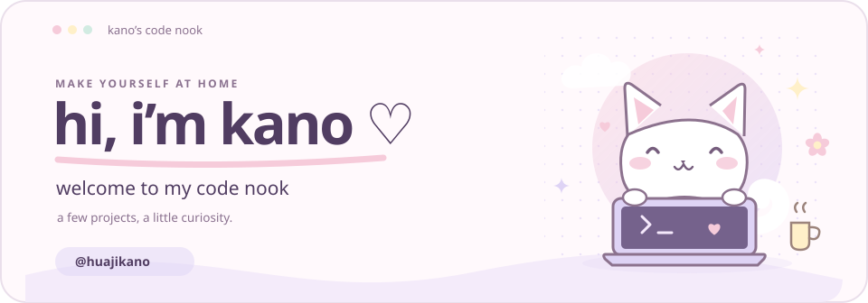
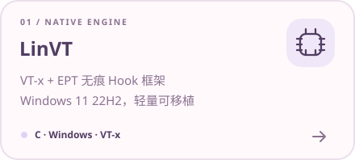
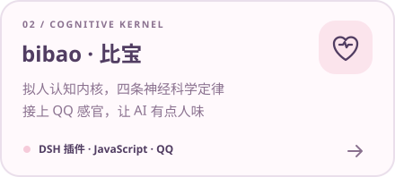
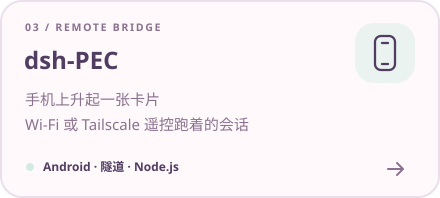
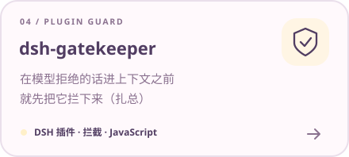
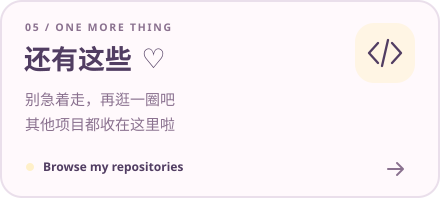

欢迎来我的代码窝 ♡
项目都放在这里啦，随便逛逛～
🐾 我的拿手好戏
- 🎮 Windows 底层 & 逆向：C / C++、VT-x + EPT 无痕 Hook、内存分析与调试。
- 🤖 AI Agent & 插件：DeepSeek Harness 插件全链路，工具集成、提示词塑形与提交前拦截。
- 📱 手机远程联动：Android 客户端加局域网 / Tailscale 隧道，把手机接上正在跑的会话。
- 🧩 桌面 & 全栈：TypeScript、Electron、React、SQLite，从 Web 服务到双击即用的工具。
- 🛠 实用小工具：C# / WinForms 单文件绿色程序，不装不依赖，打开就能用。
🧶 用到的技术
🎀 公开项目精选





点开卡片看看吧，没准有你感兴趣的 ♡